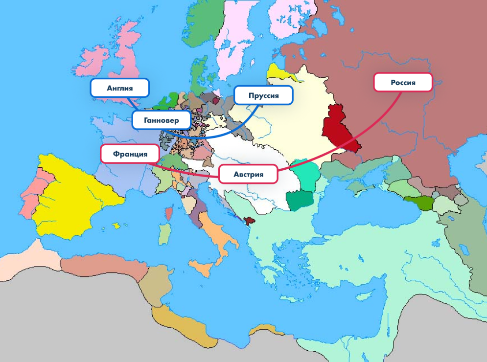
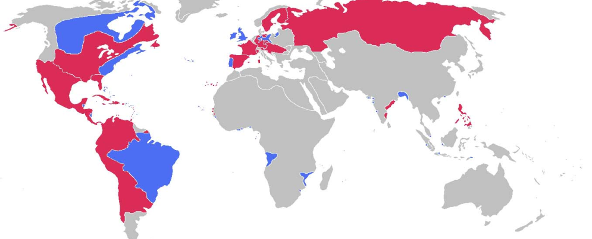
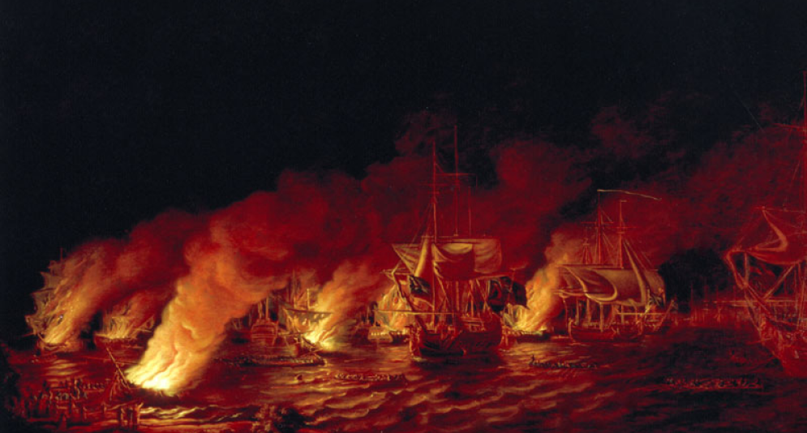
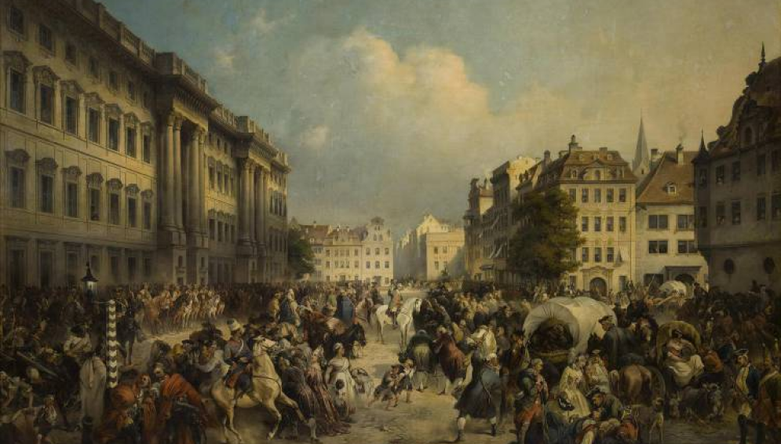
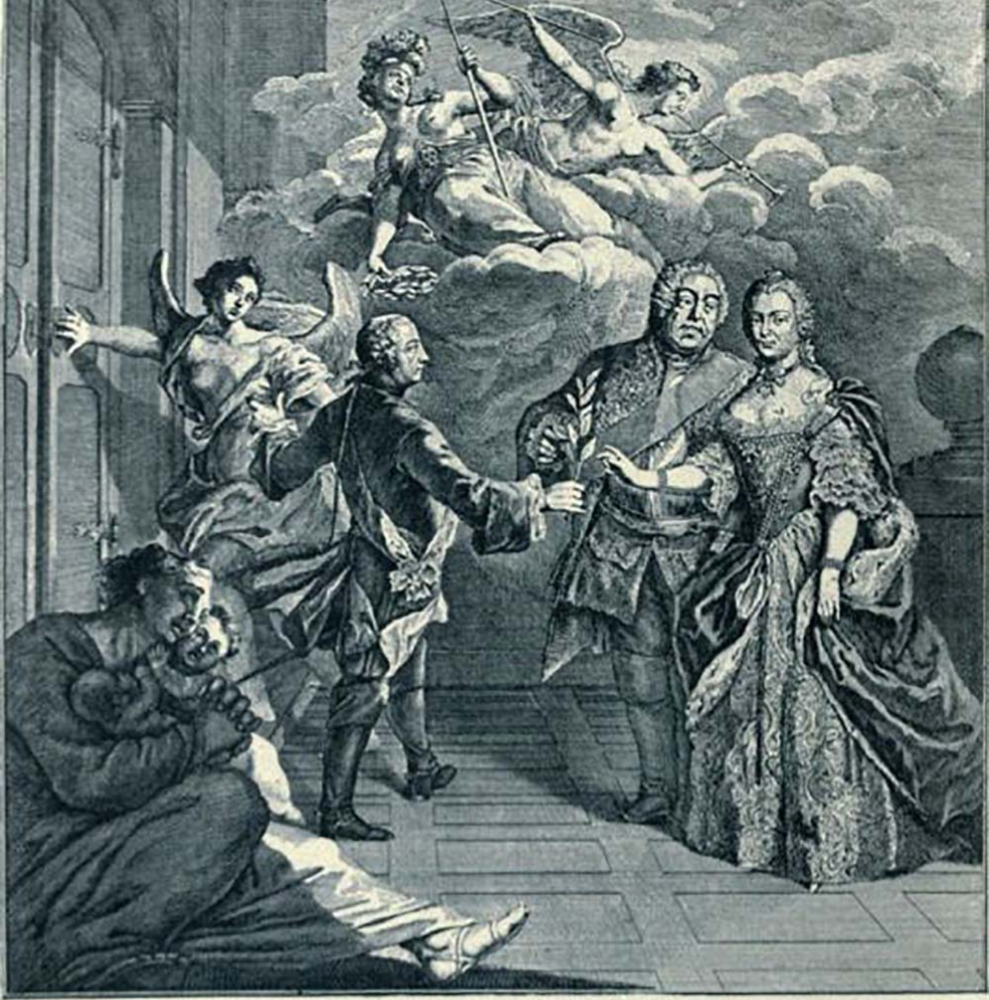

Семилетняя война: причины и дипломатические союзы

Карта: англо-прусская и антипрусская коалиция
- Пруссия после прихода к власти Фридриха II начала претендовать на ведущую роль в европейской политике.
- Австрия не хотела мириться с потерей экономически развитой Силезии.
- Англия и Франция вели соперничество за колонии в Северной Америке, в 1755 году соперничество вылилось в вооруженный конфликт. В 1756 году Англия объявила войну Франции.
- Англия в 1756 году заключила союз с Пруссией, у которой в этот период был континентальный союз с Францией. Франция разорвала союз с Пруссией.
- Россия еще в 1746 году заключила союз с Австрией против Пруссии. Россию беспокоило усиление Пруссии, это воспринималось, как реальная угроза для российских границ на Западе.
- Австрия заключила оборонительный союз с Францией против Пруссии, к которому присоединилась Россия.
Семилетняя война: коалиции

Карта: англо-прусская и антипрусская коалиция
- Пруссия была вынуждена воевать с тремя мощными европейскими державами на европейском континенте: Францией (мадам Помпадур), Австрией (Мария Терезия) и Россией (императрица Елизавета Петровна).
- Антипрусская коалиция насчитывала армию в 419 000 солдат, а Пруссия имела войско только в 200 000 солдат.
- Однако внутри антипрусской коалиции между Австрией, Францией и Россией существовали взаимные претензии, что приводило к противоречиям и слабости блока.
Семилетняя война: театр боевых действий в Северной Америке
и Азии между Англией и Францией

Битва при Квебеке, художник Д. Серрес
- 1757 год Франция потерпела поражение от английских войск в Индии.
- 1759 год битва при Квебеке, англичане захватили французскую Канаду.
Семилетняя война: театр боевых действий в Европе

Взятие Берлина русскими войсками, 1760 год, художник А. Коцебу.
-В августе 1756 года Фридрих II вторгся в Саксонию. Солдаты Саксонии были насильно «загнаны» в прусскую армию.
- 1757-1758 годы столкновения в Восточной Пруссии между русской и прусской армиями.
- 12 июля 1759 год русская армия взяла Франкфурт-на-Одере.
- 1 августа 1759 год – Кунерсдорфское сражение, победа австрийской и русской армии.
- «чудо Бранденбургского дома» - Австрия и Россия не смогли договориться и отвели свои войска от Берлина.
- август 1760 года – русский генерал-майор Тотлебен штурмует Берлин, оставленный в городе гарнизон присягает ему на верность.
24 апреля 1762 году – Петербургский мир: российский император Петр III, сменивший Елизавету Петровну, подписал с Пруссией мирный договор и отказался от всех территорий в Восточной Пруссии.
Семилетняя война: мирные договоры 1763 года.

Губертусбургскиймир 1763 года
-В августе 1756 года Фридрих II вторгся в Саксонию. Солдаты Саксонии были насильно «загнаны» в прусскую армию.
- 1757-1758 годы столкновения в Восточной Пруссии между русской и прусской армиями.
- 12 июля 1759 год русская армия взяла Франкфурт-на-Одере.
- 1 августа 1759 год – Кунерсдорфское сражение, победа австрийской и русской армии.
- «чудо Бранденбургского дома» - Австрия и Россия не смогли договориться и отвели свои войска от Берлина.
- август 1760 года – русский генерал-майор Тотлебен штурмует Берлин, оставленный в городе гарнизон присягает ему на верность.
24 апреля 1762 году – Петербургский мир: российский император Петр III, сменивший Елизавету Петровну, подписал с Пруссией мирный договор и отказался от всех территорий в Восточной Пруссии.